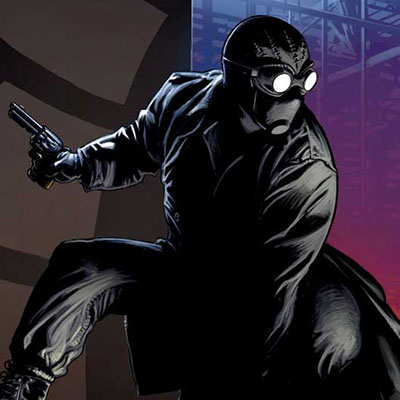

Welcome, true believers! Growing up in the 90's, Spider-Man was my absolute favorite super hero. Since the days of Spider-Man: The Animated Series, the web-slinging hero has had multiple adaptations, from movies to comic books. This site will show you some of my favorite adaptaions of the wall-crawler and provide a few tidbits of information. Remember, with great power comes great responsibility...
-
Amazing Spider-Man
-
Superior Spider-Man
-

Noir Spider-Man
-
Spider-Man 2099
-
Ultimate Spider-Man
-
Symbiote Suit Spider-Man
The most well-known Spider-Man of them all, the Amazing Spider-Man is the foundation for which all other iterations were built upon. The man behind the mask, Peter Parker, was bitten by a radioactive spider during his high school years. Soon after, Peter himself gained powers similar to that of a spider, such as the ability to crawl on walls and a spider sense that alerted him to nearby danger. Peter also created his own mechanism to create webs like a spider that he uses commonly for travel and fighting off bad guys. However, Peter decided to not use his powers responsibly one night, which lead to the death of his Uncle Ben. From that point forward, Peter adopted the phrase "With Great Power comes Great Tesponsibility."
One of the more recent iterations of Spider-Man, Superior Spider-Man put an interesting twist on the famous wall-crawler: Peter's mind was swapped with one of his greatest foes, Doctor Octopus. Prior to his death, Doc Ock swapped minds with Peter Parker and took over Peter's body and role as Spider-Man. However, Doc Ock was out to prove himself to be the Superior Spider-Man. This resulted in an upgraded suit for the wall crawler, which included homage to Doc Ock's famous tentacles.
My all-time favorite adaptation of the webhead, Spider-Man Noir depicts Spider-Man in the 1920's during the Great Depression. Peter Parker, an investigative reporter at the time, receives a tip off meant for another reporter. This leads him to a warehouse where a spider statue antique breaks open, releasing a horder of spiders. One of these spiders bites Peter, causing him to faint and have a dream about a spider god. Upon waking up, Peter realizes he know posseses the same powers as that of a spider, leading him to become Spider-Man. The Noir universe's Spider-Man posseses organic web shooters as opposed to mechanical shooters used by fellow Spider-Men. Additionally, he dones a trench coat and fedora while wielding pistol revolvers.
The year is 2099 and Peter Parker is... not Spider-Man?! In this universe, the man behind the mask is none other than Miguel O'Hara, a genetics enigineer for the corporation known as Alchemax. The goal of Alchemax was to create "corporate raiders", super-powered soldiers controlled by the corporation. When Miguel tries to resign from Alchemax after a failed experimentation for the corporate raiders project, Tyler Stone (Vice President of R&D for Alchemax) offers him a drink. Unbeknownst to Miguel, the drink is laced with a hallucinogenic drug called "Rapture". With Alchemax being the only manufacturer of the drug, Tyler blackmails Miguel so that he will remain with the company. In order to rid himself of Rapture, Miguel performs the same experiment on himself, but the experiment is sabotaged by his supervisor, Aaron Delgato, in an attempt to kill him. However, Miguel survived the process... and had his DNA spliced with that of a spider. Spider-Man 2099 posseses the traditional powers that a spider would have, but also has powers such as telpathy, accelerated vision, and a self-healing ability. As for combat, Spider-Man 2099 uses spinnerets to release web-like substance, as well as talons and fangs.
Prior to the death of Peter Parker, Miles Morales, a young kid from Brookyln, was bitten by a spider genetically enhanced with Peter Parker's blood and the Oz formula. After being bitten, Miles had the same superpowers that Peter Parker did; however, Miles wants nothing to do with these superpowers. That is, until Miles learned that Peter Parker died saving his family from the Green Goblin. Stricken with grief for not using his powers to help Peter, Miles decided to continue Peter's legacy and honor his philosophy: with Great Power comes Great Responsibility. Miles posseses the standard abilities of a spider after being bitten, but also gained a few other powers such as bio-electrokinesis, spider-camoflauge, and regenerative healing.
While technically not a unique Spider-Man, the Symbiote Suit (or Black Suit) Spider-Man is among the top fan favorites. During the Secret Wars story arc, Spider-Man's trusty red and blue suit was damaged in battle. Looking to have the suit repaired, he was sent to a machine to have it repaired. But this machine did not repair his suit; instead, it housed an alien symboite that bonded with Spider-Man, thus doning his black threads. Once the Secret Wars concluded, Spider-Man returned to Earth sporting the Black Suit. During his time with the Black Suit, he learned the dangers of being bonded with a symbiote. The symbiote was able to respond to his thoughts, change shape, and would take Peter web-swinging every night. Looking to separate from the suit, Peter had it removed using a combination of heat and sound (both weaknesses to the alien symbiote) with some help from the Fantastic 4. However, the symbiote was able to escape and find its way back to Peter. After having the symbiote re-attach itself, Peter removed it again, this time using the sound of ringing church bells. After being rejected by Peter twice, the symbiote found its way to a new host, Eddie Brock, and thus was born one of Spider-Man's greatest adversaries: Venom.